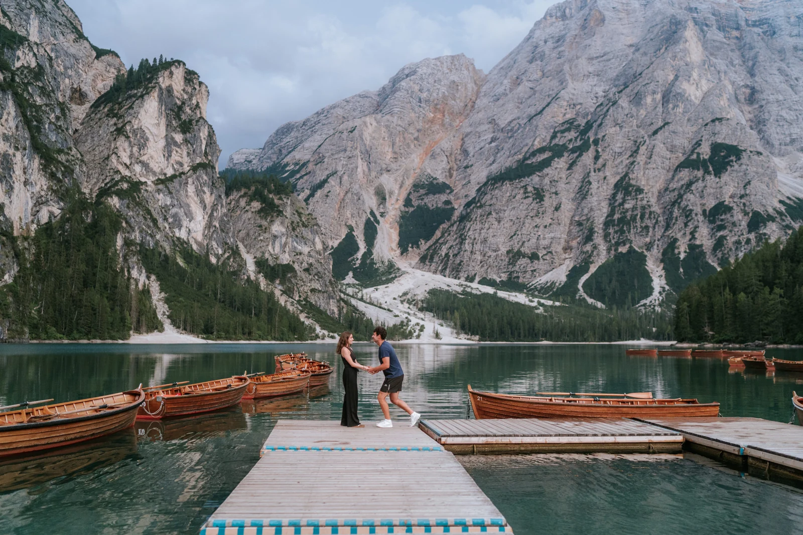
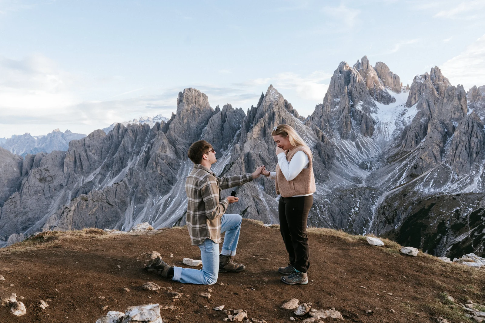
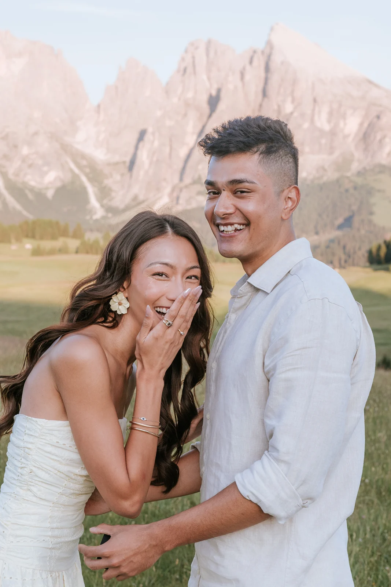
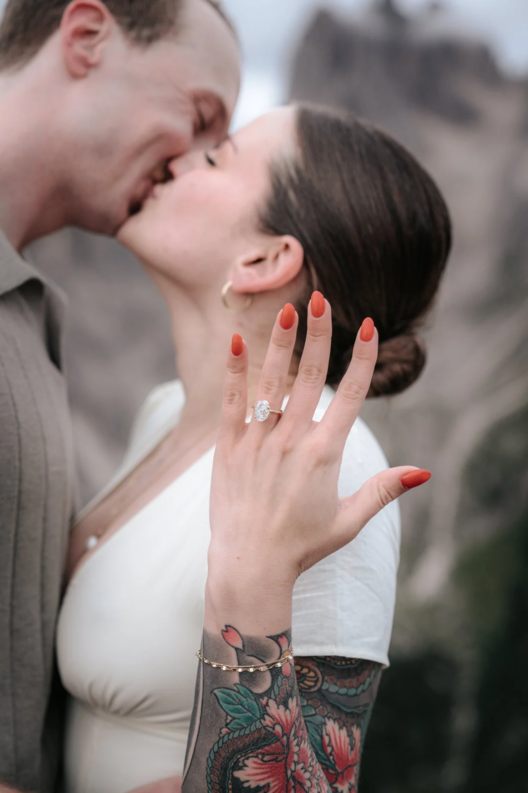
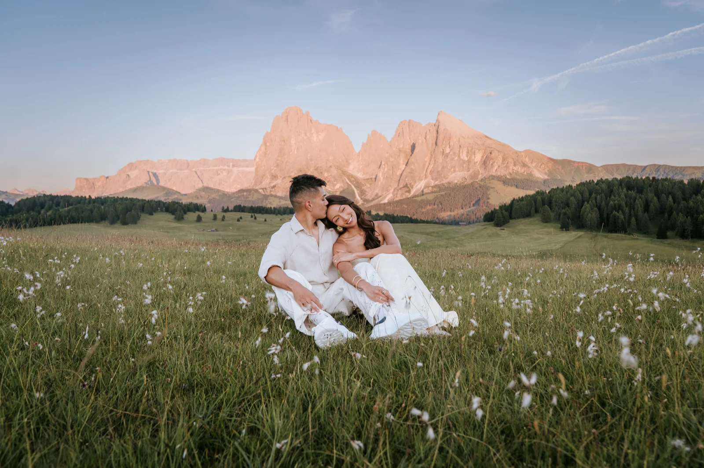

Ihr wollt an einem Ort um die Hand anhalten, der den Atem raubt — und ihr wollt den Moment für immer festgehalten, genau so, wie er geschieht. Genau das machen wir: ein geheimer, schön geplanter Überraschungs-Antrag in den Dolomiten und den österreichischen Alpen, aus der Ferne fotografiert, sodass euer Gegenüber uns nicht sieht, bis der Ring draußen ist. Danach ein entspanntes Paar-Shooting, solange ihr beide noch strahlt.
Es hat einen Grund, warum Menschen einen Kontinent überqueren, um in den Dolomiten niederzuknien. Bleiche Kalktürme, die im ersten Licht rosa anlaufen, türkise Seen, spiegelglatt, ein Horizont ohne Ende — es ist die romantischste Kulisse Europas, und im Sonnenaufgang ist sie fast leer. Wir haben hier Anträge zu jeder Jahreszeit fotografiert, und das Muster ist immer gleich: je größer die Aussicht, desto kleiner und ehrlicher fühlt sich der Moment an. Ihr müsst nur die Frage stellen.


Der ganze Plan entsteht per Nachricht, damit nichts in einem geteilten Postfach landet. Ihr nennt uns den Termin und die Überraschung, von der ihr träumt; wir schlagen den Ort vor, rechnen das Timing rückwärts vom Sonnenaufgang und vereinbaren ein kleines, unsichtbares Zeichen — eine Hand zur Tasche, ein Schritt zum Geländer — für den Moment, in dem ihr niederkniet. Am Morgen sind wir längst da, gekleidet wie alle anderen am Weg, und fotografieren aus der Ferne mit dem Teleobjektiv. Euer Gegenüber sieht Wanderer, keine Fotografen.

In dem Augenblick, in dem das Ja heraus ist, treten wir hinzu, stellen uns vor, und die ganze Stimmung kippt — Erleichterung, Lachen, Ungläubigkeit. Dann gehen wir in ein richtiges Paar-Shooting über, solange das Gefühl noch frisch ist, sodass ihr mit der Überraschung selbst und einer Porträtserie vom selben goldenen Morgen geht. Meist können wir noch am selben Tag ein paar bearbeitete Bilder schicken, sodass die Ersten, die sie sehen, jene sind, die ihr vom Weg aus anruft.
Die besten Antragsorte teilen zwei Dinge: einen natürlichen Grund zum Anhalten und fast keinen Fußweg, denn eine lange, verschwitzte Wanderung verrät den Plan. Seen an der Straße sind ideal — der Steg am Pragser Wildsee oder der kleine Lago d’Antorno, wo ihr im ersten Licht das Geländer für euch habt. Bergbahn-Aussichtspunkte wie die Sass-Pordoi-Terrasse oder die Nordkette über Innsbruck sind ebenso leicht, doch die Bahnen öffnen erst nach Sonnenaufgang, wir planen den Morgen also nach dem Fahrplan. Tragt den Ring beim Gehen in einer geschlossenen, sicheren Tasche — nie in einem Mantel, den ihr weiterreichen könntet.

Zum ausführlichen Antrags-Planungsguide →
Ein Antrag funktioniert das ganze Jahr — und immer am besten im ersten Licht: leere Wege, weiche Farben und die wenigsten Fremden im Hintergrund. Sommer und Frühherbst sind am leichtesten für den Zugang; der Winter macht die Gipfel monochrom und magisch. Zu den Kosten: Ein Antrags-Shooting ist eine kürzere, einfachere Buchung als ein ganzes Elopement und liegt daher unter unseren Elopement-Paketen. Weil jeder Antrag anders ist, schicken wir ein maßgeschneidertes Angebot statt einer festen Zahl — sagt uns euren Termin und was ihr euch vorstellt, und wir kommen umgehend mit einem klaren Angebot zurück.
Das ist unsere Spezialität. Wir planen jedes Detail vorab mit euch per Nachricht — den Ort, das Timing, ein kleines Zeichen für den Moment, in dem ihr euch hinkniet. Am Tag kommen wir früh, mischen uns unter die anderen Wanderer und fotografieren aus der Ferne mit dem Teleobjektiv, sodass euer Gegenüber nichts ahnt, bis der Ring draußen ist. Erst nach dem Ja treten wir hinzu, stellen uns vor und machen ein entspanntes Paar-Shooting daraus. Die Überraschung bleibt eine Überraschung.
Die besten Antragsorte bieten einen natürlichen Grund zum Innehalten und wenig Aufwand — eine lange, verschwitzte Wanderung verrät den Plan meist. Seen an der Straße sind perfekt: der Steg am Pragser Wildsee oder der kleine Lago d’Antorno, wo ihr im ersten Licht das Geländer für euch habt. Bergbahn-Aussichtspunkte wie die Sass-Pordoi-Terrasse oder die Nordkette Minuten über Innsbruck sind ebenso leicht. Wir stimmen den Ort auf eure Fitness und die geplante Überraschung ab.
Wir planen darum herum. Das erste Licht schenkt leere Wege und weiche Farben, aber das Bergwetter wechselt schnell, deshalb halten wir immer einen Ausweichort und, wo möglich, einen Reservemorgen bereit. Grauer Himmel und Nebel sind kein Problem — einige der bewegendsten Antragsbilder, die wir je gemacht haben, entstanden bei sanftem Regen und tiefen Wolken. Wir verfolgen die Vorhersage in den Tagen davor genau und wählen das Fenster, das passt.
Ja — und es ist einer der schönsten Teile. Sobald das Ja heraus ist und die Nervosität geschmolzen, fotografieren wir weiter für ein entspanntes Verlobungs-Shooting, solange ihr noch strahlt. Ihr bekommt die Überraschung selbst und dazu eine richtige Porträtserie vom selben Morgen, und meist können wir noch am selben Tag ein paar Bilder liefern, damit ihr sofort etwas mit der Familie teilen könnt.
Das ganze Jahr über — und immer im ersten Licht. Der Sonnenaufgang schenkt die ruhigsten Wege, die weichsten Farben und die wenigsten Fremden im Hintergrund — die perfekte Tarnung für eine Überraschung. Sommer und Frühherbst sind am leichtesten für den Zugang; der Winter macht die Gipfel monochrom und magisch und schenkt fast völlige Einsamkeit. Sagt uns eure Reisedaten, und wir finden den besten Morgen darin.
Ein Antrags-Shooting ist eine kürzere, einfachere Buchung als ein ganzes Elopement und liegt daher unter unseren Elopement-Paketen. Weil jeder Antrag anders ist — der Ort, die Anreise, die Länge des Paar-Shootings danach —, schicken wir ein maßgeschneidertes Angebot statt einer festen Zahl. Sagt uns euren Termin und was ihr euch vorstellt, und wir kommen umgehend mit einem klaren Angebot zurück.
Wir verwenden Cookies für anonyme Statistik (Google Analytics über Google Tag Manager), um die Website zu verbessern. Die Analyse läuft nur mit deiner Einwilligung. Datenschutz